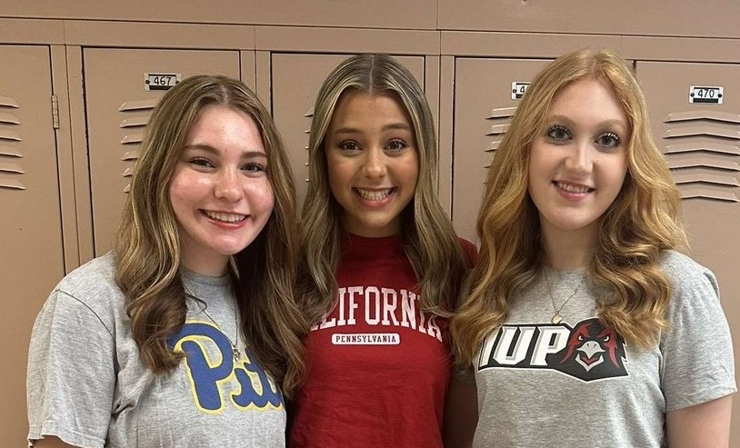

Hi! My name is Karleigh Sage. I'm a freshman at the University of Pittsburgh and I'm currently studying Law, Criminal Justice, and Society. I’m hoping to later attend Pitt’s law school to gain my Juris Doctor and hopefully work to become a criminal defense attorney. I chose Pitt for many different reasons, but the most important one is the multiple opportunities. The high school I attended was very small as there were literally only 58 people in my graduating class so there weren’t that many opportunities around me. However, Pitt is significantly bigger, and it has so many different opportunities, especially for my major. I joined a club at Pitt specifically for women going into the legal field. It's so nice to go to a school where I can relate to different people in my career. Another reason I chose Pitt is for the school spirit. I was never really a Pitt fan, as I was raised 30 minutes outside of Penn State, so I almost feel like by nature I had to be a Penn-stater. However, coming here, I was immediately immersed into being a panther and doing the many different Pitt traditions. My high school also was never really into school spirit, as many of our sports teams were small, so being able to cheer for my school and go all out for school spirit is something I could never take for granted. While I’m studying Law at Pitt, another field that really holds my heart is Theatre, which I talk about in a later section. I did theatre along with various other activities in high school such as choir, cheerleading, marching band, volleyball, basketball, and student government. So, I would consider myself a very well-rounded person, which I believe helps me at Pitt connect with many different people. Pictured below are two of my best friends from high school, Olivia and Julie. Olivia attends college at Penn West California University of Pennsylvania and Julie attends Indiana University of Pennsylvania. Both schools are a decent drive from Pitt, but we’ve found ways to still visit each other. High school would’ve been a lot rougher if I didn’t have both of them, so I am forever grateful to have them in my life.
The video above is the Spongebob Musical's performance at the Tony Awards. My sophomore year of high school, we had the fortune to put on a production of the Spongebob Musical in which my best friend and I were able to play Spongebob and Patrick. This show unexpectedly became one of my favorite musicals. Throughout my experience in highschool, I remained in one activity through it all, theatre. I first joined my school's production of "The Music Man" in 5th grade as a part of the children's ensemble and have been enthralled in the theatrical world since then. The fact that someone could easily step into a completely different life on stage is so cool to me. The main category of theatre I enjoy is musical theatre. While many people may not enjoy singing and dancing on stage, I find it as a nice release of energy. The way a stage setting can enforce creativity is also very interesting to me. Actors, directors, set managers, and stage crew have to understand how to use a stage space as effective as possible. It's a whole different environment from sports which I also had played in highschool and I just have always found a comfortable space there. Theatre has also helped me become a well-rounded person as it has caused me to be empathetic towards others, work and befriend people of many different backgrounds, and communicate effectively with others. I truly don't think I would be the same person I am now without theatre in my life.
Pictured behind this text is my 6-year-old cat who acts like a human toddler, Lola. She was a rescue from a litter of kittens that were born in a barn. I truly believe she is my best friend in animal form. She can be grumpy, sassy, and a little mean at times, but she does in fact have a nice side. I miss her a lot but it's also nice to have something like that to miss. Lola is not an "only child" however as my family also has a 10-year-old cat and a 5-year-old dog. The other cat's name is Gracie. She is a grey and white cat who is the complete opposite of Lola. She's very quiet and shy, however, she is the sweetest cat I've ever met. Our dog's name is Loki, and she is a black lab and rottweiler mix. She is such a sweetheart but very clingy. I blame this on her being a "covid puppy" as during covid my family was obviously home every day.
My encomium essay deals with the use of Artificial Intelligence and technology as a whole. My essay talks about the short story written by Harlan Ellison titled, "I Have No Mouth, and I Must Scream". This story is a futuristic narrative about the dangers of humans abusing Artificial Intelligence. I believe the story serves as a very good warning against technological misuse. Even though the future in the story is highly improbable, the fear it could be real is a good warning.
Click here to read!generated by Pitt Fuego
Here's another cute little picture of my cat :)